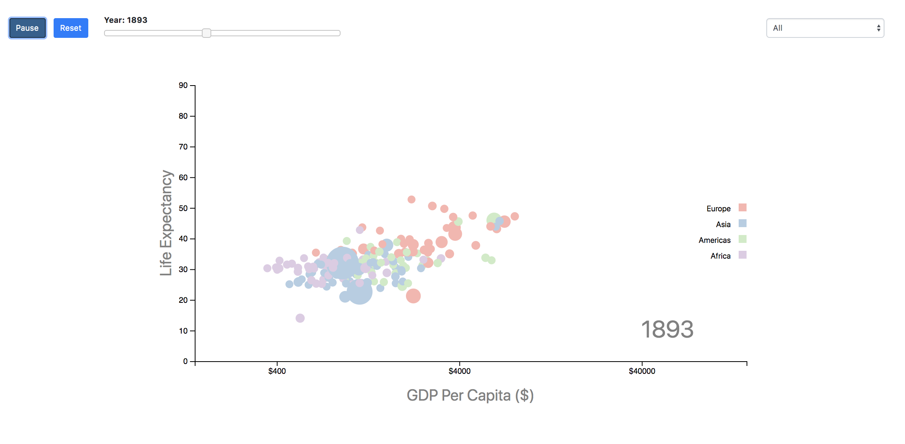
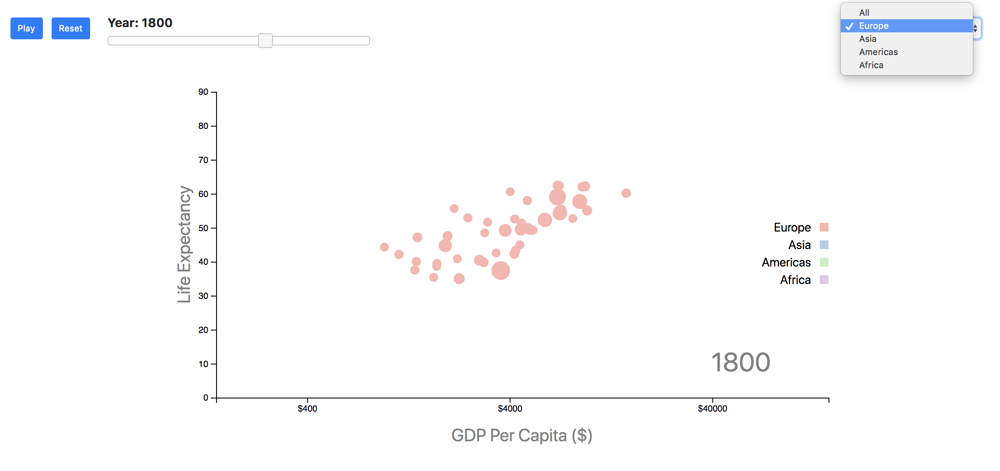

Discovery Process
This project I plan to combine data from Gapminder to make the chart more informative. My idea is to
combine Hans Rosling's model and my project together.
So the dot can represent each country, the line chart to show the tendency of changing, the donut chart and text
box show the detail information. I succeed to code Han Rosling's model,
but don't have enough time to finish the whole visualization idea.
The dot represent different country, the size of fot shows the population
of the country. Different color represent differient continent.
# Click 'Play' button, the dot will changing the size, x-Axis and y-Axis
location acoording to the year, 'Reset' button reset the year to 1800.

# Slide the slider bar to change the year variable
 # Select the continent to show only one continent in the chart
# Select the continent to show only one continent in the chart

# Hover the dot to show the detail information about the country regarding GDP, population and life expectency.